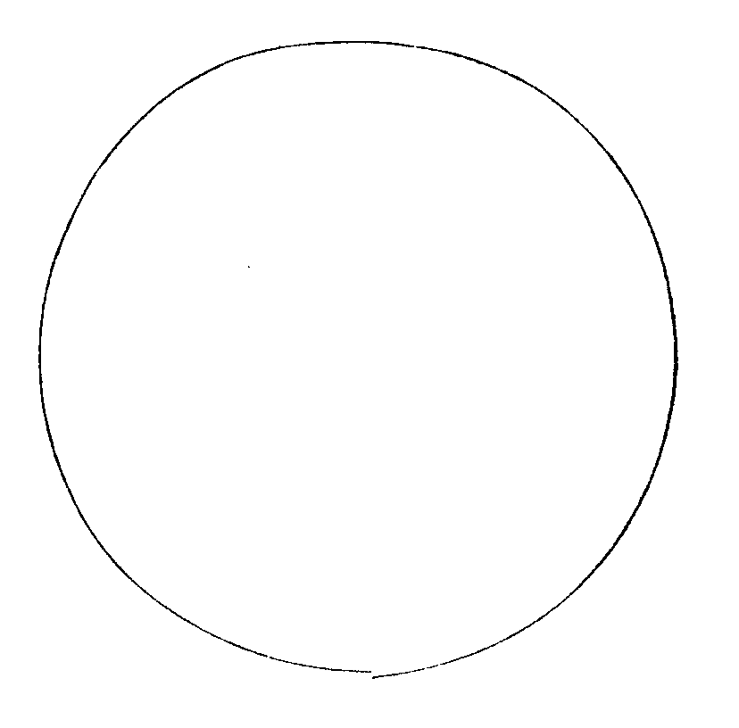
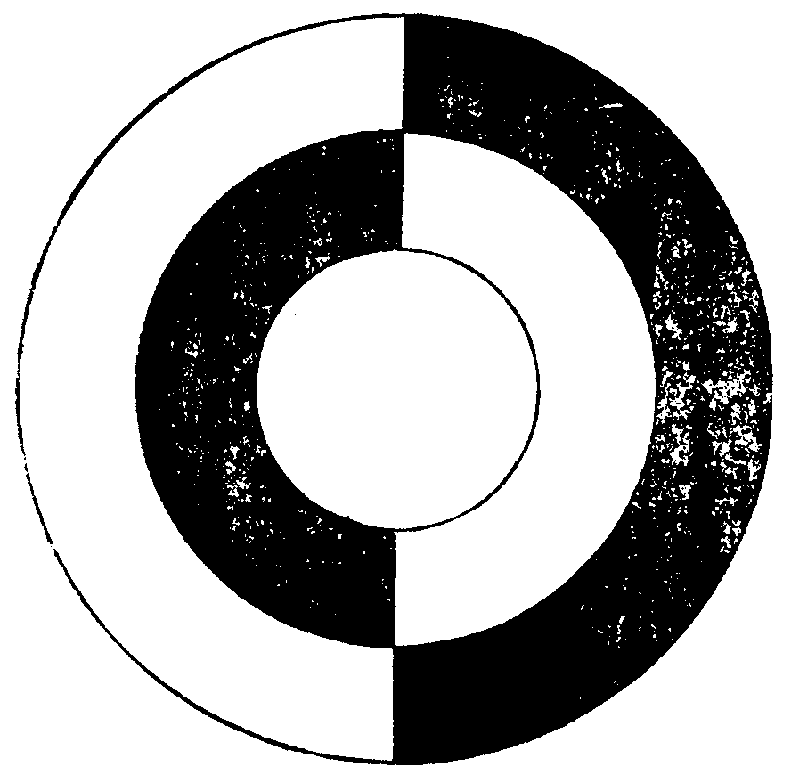
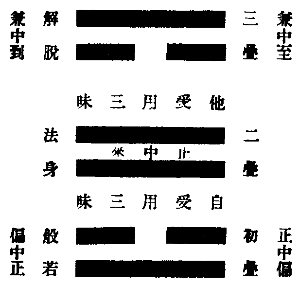
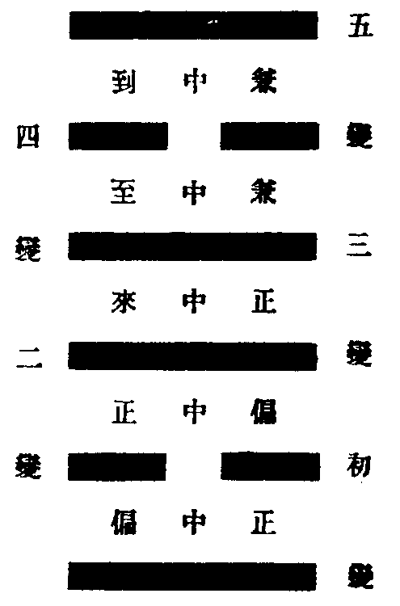
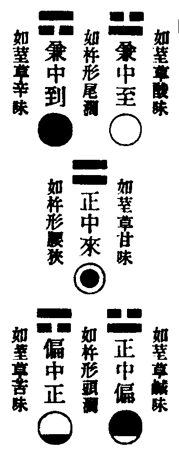
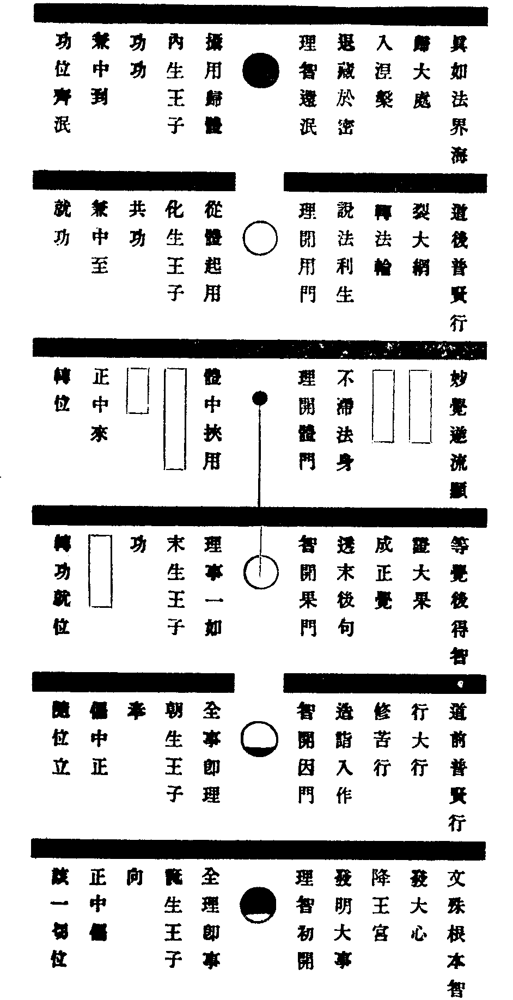

卍新纂大日本續藏經 第63冊
No.1237 寶鏡三昧本義 (1卷)
【清 行策述】
第 1 卷
No. 1237
寶鏡三昧本義
寶鏡三昧者。洞山親印於雲巖而密授曹山者也。洞下諸師恐屬流布。但於室中密授。以定宗旨。以防滲漏。自朱世英得之老僧。始獲傳於世。文有三百六十言。於中如離六爻偏正回互數語。為一篇之樞鈕。然祕藏幽扄難開物解。間有一二尊宿出其義意。又支離失旨。適以辱先宗而悞後學。近見人天眼目一書載五家宗旨。而洞宗譌舛滋多。豈非迷此本源三昧之故與。予友旅堂居士胡介見而傷之。屬予考正其義。既而居士謝世。予蘊諸懷者數年。一日偶因禪者勸請遂闔戶燒香三復遺言。覺三昧精義於重離一卦中層見疊出。因抽繹其緒作六種圖說以發明之。初一為總。後五為別。葢欲闡發幽微。非為世諦流布。知我罪我所不暇計也。予既慨古說紕繆。且不欲負旅堂之託。勉而述此。敢曰三昧本義。果如是乎。惟具眼者辨之。六種圖說者。寶鏡三昧圖說。正偏回互圖說。三疊分卦圖說。五變成位圖說。二喻顯法圖說。六爻攝義圖說。
寶鏡三昧圖說

向上一竅。千聖不傳。隨義悉檀。故形文彩。此在儒乘謂之太極。本不可名。強名太極。本不可狀。強作此相。凡兩儀四象以至六十四卦。皆從此相生。此相從無相生。無相無生無不生。今論此相。入我法中有種種名。華嚴名此為一真法界。法華名此為一實相。涅槃名此為祕密藏。六道眾生具此昧此。為第八阿賴耶識。名如來藏性。三世諸佛轉此證此。為第九菴摩羅識。名大圓鏡智。歷代祖師悟此傳此。為最上祕密宗旨。名寶鏡三昧。一切教乘為能詮。此為所詮。一切宗乘為能標指。此為所標指。然此中却無能所。無名相。無言句。所謂混沌未分。黑白未兆。參玄上人當先了此。若未了此而說正說偏說明說暗。猶如話月。豈能照境。故知乖明淨之體。缺鑒照之用。雖終日寶鏡中而三昧叵得也。雖然。作此相時已屬染污。況復婆和。姑置勿論。
正偏回互圖說

此圖兩儀既判。黑白已分。以黑表正。以白表偏。所謂正中有偏。偏中有正。回互之義本此。中間仍有一虗相者。表向上事。今亦隱於黑白間也。黑白是奇偶二數。即前太極相所生。為卦畫爻象之本。然論所表之法。不惟偏正。今略配名義使不迷宗。所謂黑者於位表正。於相表暗。於時分表夜。於界處表內。於人倫表君父。於二家表主。於法界表理。於法門表體。於二德表性。於二嚴表智。於二智表實。於二門表本。於四十二位表果。所謂白者為偏位。為明相。為晝分。為外界。為臣子。為賓家。為事法界。為用門。為修德。為功動。為權智。為迹門。為因位。此諸二法雖各依位住。而飛伏隱顯互相涉入。雖互相涉入而又各住本位未甞混亂。此非意識之境。入此三昧。法如是故。此回互之義。為一家之要旨。洞宗學者尤宜詳之。
三疊分卦圖說

此圖已略見大意。卦有六爻。統惟奇偶二數。先聖取其回互之象以立宗旨。但其旨既幽祕。而形諸文者復引而不發。意欲學者於入道後深思而自得之耳。乃從上諸師異說紛紜。昧於三疊五變之言。向本卦外別變五卦支離配釋。大非旨也。不知本文直云。如離六爻是取正偏回互之象。非取離為心火之卦義也。而本卦中自具三疊五變天成玄妙之趣。學者苟不向外求索。於此爻象諦觀熟玩。思之思之又重思之。則鬼神將為冥通而祖意無餘蘊矣。今不攻異端直出本義。先將本卦六爻分為三疊以象三德。所謂疊而為三者也。即初二兩爻為初疊。洞上之宗貴乎回互。故順象正中偏。互象偏中正。與五變中初二兩變之爻正同。象般若德也。以三四兩爻為二疊。回互觀之。純陽無陰。但第四爻陽居陰位。是正偏妙叶。故象正中來。即是三變之爻。象法身德也。以五六兩爻為三疊。互象兼中至。順象兼中到。與四五兩變之爻正同。象解脫德也。又內卦三爻陰陽住位。為自受用三昧。外卦三爻陰陽易位為他受用三昧。其三德三昧之義。後當廣明。
五變成位圖說

此即三疊六爻變為五位。以盡一卦理趣。所謂變盡成五者也。就五位中開之則有十爻。以更互取象。故仍不出本卦六爻之外。疊變之巧其在茲乎。然變有二義。一變化義。二變易義。今但取變易義。例如四十二位因果互易。謂之變易生死是也。既知變是易義。則易爻不易卦。若別出五卦。與五位名義無涉。況位次混亂。圖相不合。亦不思之甚也。且明說如離六爻偏正回互。奚取於多卦多爻。千古病根只在錯看變盡成五一句耳。洞山本意謂。易盡六爻恰成五位。既誤易盡為化盡。又誤成五位為成五卦。以故支離配釋愈出而愈謬也。略明五變竟。復次。若欲配位。不須互取十爻。只就六爻。五位義足。今更悉之。謂以初一爻為正中偏。葢全理即事。故此正中即有偏。但偏相不可見。譬如朔日之月。暗中明相不可言無。故參同契云。當暗中有明。勿以明相覩是也。以是義故。不須互取第二陰爻也。次以第二一爻為偏中正。葢全事即理。故此偏中即有正。但正相不可見。譬如望日之月。明中暗相決定是有。故參同契云。當明中有暗。勿以暗相遇是也。以是義故。不須互取第三陽爻也。次以三四兩爻為正中來。此位必須兩爻互取方成位義。後當別明。次以第五一爻為兼中至。第六一爻為兼中到。葢此二位在正中妙叶之後。故二圖雖純白純黑。一是妙叶而發於用。為理事雙彰。一是妙叶而歸於體。為理事雙泯。曰兼至。曰兼到。兼即互義。以是義故。不須互取四五兩爻也。既爾。何故疊變中皆取複不取單。葢以單爻義雖具而相不顯。回互之象不得灼然昭著。且與正中來一位單複不等。以是義故。捨單用複。然則據實言之。位位回互。爻爻回互。單即具複。複即是單。單複複單彌顯重重無盡之義也。思之。
二喻顯法圖說

此圖理趣較前愈妙。前約正偏單複以配位。今約總別濶狹以顯法。總別是顯法味。濶狹是顯法相。所謂如荎草味。如金剛杵是也。以此二喻雙顯五位之法。是謂玄之又玄眾妙之門也。今先明總別者。喻中荎草為總。五味為別。法中離卦為總。五位為別。荎草即藥中五味子。一物而具五味。喻一卦而具五位也。開一為五。合五成一。五一執亡。開合無礙。大意如此。若次第說者。天一生水是為初爻陽位。水曰潤下。象初爻居一卦之下。潤下作鹹。故為鹹味也。地二生火是為二爻陰位。火曰炎上。象二爻自下而上。炎上作苦。故為苦味也。天三生木是為五爻陽位。木曰曲直。曲與直反。象第五陰爻與陽位反。曲直作酸。故為酸味也。地四生金是為六爻陰位。金曰從革。從與革反。象第六陽爻與陰位反。從革作辛。故為辛味也。天五生土是為中陽之位。土爰稼穡。象果地能生諸功德。稼穡作甘。故為甘味也。又水以濡溼為義。象正中偏之初沾理水。火以照暗為義。象偏中正之起行向果。木以發生為義。象兼至之發於用。金以退藏為義。象兼到之歸於體。土以堅靜為義。然有智震動。象正中來。以重陽堅實而有微動之意。故約五行配五位味也。又此五行之中。水與火對。金與木對。而土獨無對位在中央。象正中來。妙挾前後四位。中正獨居尊貴之位。不可有對。故洞山頌中誡令學者無觸當今之諱。所謂錯然敬之則吉也。又喻中隨觸一味五味具足。以總是一物故。法中一位纔舉五位俱該。以總屬一心故。故借荎草以喻法味之妙也。次明濶狹者。喻中濶狹易知。金剛杵者。力士所執之寶杵。其形頭尾濶而腰獨狹。故取之以喻法相。法中濶狹者。重離六爻雖分五位。不違三法。故以初二兩位合為一法。葢理與事對。智與行對。如鳥二翼。如車兩輪。翼欲其比。輪欲其竝。缺一則難翔空致遠。是故爻位雖有次第。法相則無前後。二位竝融是真般若。是為法中頭濶。次以四五兩位合為一法。葢體與用對。權與實對。如月有影。如燈有光。彰則雙彰。泯則齊泯。離二則成狂見戲論。是故爻位雖有次第。法相亦無前後。二位同時是真解脫。是為法中尾濶。次以第三正中來位自為一法。葢前兩位是望此位造入者。後兩位是從此位轉出者。惟此位統前攝後。獨一無侶。理事智行體用權實。入此位中皆悉如如。所謂一如無二如。無二如故是真法身。是為法中腰狹。又喻中寶杵。舉頭則腰尾連屬。舉腰則頭尾俱來。舉尾亦爾。此三處若一處壞則不成寶杵。法中三法即是一法。名為祕藏。若約本名。自具法喻。即名寶鏡三昧。此中說正偏。真般若必具解脫法身。說正中。真法身必具般若解脫。說兼中。真解脫亦爾。此三法若一法缺則不成祕藏。又喻中寶杵是金剛。堅牢不壞故。究竟成濶狹之形。法中祕藏即寶鏡三昧。圓淨無缺故。究竟具濶狹之相。故借金剛杵以喻法相之妙也。次復應知此三昧中開合之相。初分一卦為三疊。次變三疊成五位。今束五位為三法。又融三法還成一法。而此三昧非一非三非五。即五即三即一。疊而為三。明一即三也。變盡成五。明一即五也。如荎草味。證五即一也。如金剛杵。證三即一也。乃至非開非合。非總非別。非濶非狹。即開即合。即總即別。即濶即狹。是為大三昧。是為甚深三昧。是為不思議三昧也。又一卦五位互取十爻。前後四位象同義異。正偏兩位則以下爻為主。上爻為互。至到兩位則以上爻為主。下爻為互。此觀象者所當悉也。本義已彰。略攻異解。覺範變大過．中孚．巽．兌．重離五卦。又改兼中至為偏中至以對正中來。而以兼到一位獨居。後大悞學者。不可不辯。葢正中來一位天然尊貴。為四位之樞鈕。猶如五方之中。五行之土。豈容有對。況正中來圖象是圈內黑相。偏中至是純白之相。全不相對。又兼中到是純黑之相。與兼中至純白之相正相對。豈可謂兼到一位獨在後而無對乎。又以偏中至對正中來。則中間有兩位。乖杵形喻。又以五卦配五位。則五位非一卦中具。違荎草味喻。是則於五圖二喻悉皆不合。全昧五位旨趣。覺範既謬出五卦。又謂古來老師大衲皆用兼中至。不曉其何義。所謂明眼人前有三尺暗。信乎。又永覺和尚變既濟．未濟．損．益．重離五卦。雖所安五位麤合法相。然以至到兩位居下。正偏兩位居上。此由錯變四卦。依卦定位。故頭尾倒置。雖似是而實大非。嗟乎。二老者所謂大老也。而於疊變之巧。二喻之妙。亦有所未知焉。自餘卑識劣解無足論矣。
六爻攝義圖說

問。如上五種圖說。發明三昧妙義足矣。此復何為而作耶。答。有二意。一是開蒙。二是攝義。良以智識昧略之人。自謂不著言象。不求甚解。於此甚深義海不沾涓滴之味。意曰夫重離六爻先聖偶然托喻耳。胡必精研而深索之。果爾則華嚴為群經之王。何故處處表法。方山長者製論。動輒以八卦五行陰陽義理配釋。豈皆出偶然耶。且河豈偶出圖。洛豈偶出書。伏義氏豈偶畫卦而數。聖人者妄著言象而玩索之耶。既非偶然。即此重離一卦中圓具世出世間一切法。若廣攝義類。則諸佛教綱列祖綱宗罄無不盡。今但略攝大綱。令未解者稍知六爻義理分齊。若神而明之觸類而長之。則存乎其人矣。所攝義類略說如左。
先取內卦三爻為自受用三昧者。葢初爻是純陽之位。若參合教乘。象首創文殊根本智。如善財以童子為純陽之人。初見文殊是純陽之友。頓明本理。發菩提心。故為初心根本之智。於天台摩訶止觀五章大意中。此當發大心也。若約本師一期化迹。則為王宮初降之相。若參學人初始發心。痛念生死。遇真善知識。開示向身心世界未形以前。隻眼豁開。頓明本有者。配屬此位。若合諸祖。則此是初生法王之家。故為誕生王子。久遠背覺。今始合覺。故為向無始已來真常理性。以智慧力今乍開發。故為正中偏也。所謂顛倒想滅。肯心自許。
第二爻是陰居陰位。象道前普賢廣大行。攝五十二位功勳。如善財自妙高峯證初住。後歷一百十城參五十三善知識。差別門庭一一透過。是謂涉大功勳。於止觀五章中。此當行大行也。若約本師。為出家苦行之相。學人省悟後踐履此道。不以得少為足。就作家爐鞴多方煅煉。深明差別日益玄奧者。配屬此位。若合諸祖。此是徧歷階級而成大業。故為朝生。然與石霜頌意稍異。彼是臣種外紹而不就位。此是王種內紹而未就位者也。又位位進修不背。故為奉。位位以無住行。趨求極果。故為偏中正也。所謂毫忽之差不應律呂。即此二位智行互資。功位迭進。智得行而繁興大用。行得智而念念無為。一即二二即一。不一不二而一而二。故成般若德也。恐學人到此失照。故取初疊二爻上下回互。以顯因慧之妙。所謂背觸俱非。如大火聚。
第三爻又是陽居陽位。象已證等覺後得智。承前位以根本智進修大行已臻極果。故人位皆正也。合前二位以象學人從凡入聖徧遊果海。中中流入不退不住。至此則轉功就位。自利行滿。故為自受用三昧也。如善財南詢終至彌勒樓閣。不離當處而徧參。不出一心而行畢。一生圓證佛果。剎那頓越三祇。理事一如。體用皆正。是為到彼岸智。於止觀五章中。說當證大果也。若約本師。為樹下成道之相。學人直了一心。不存悟境。徹法源底。透末後牢關。所謂一生參學事畢者。配屬此爻。若合諸祖。此是等覺最後之身。故為末生。因涉大功勳而至。故為功。即就中功也。所謂類之弗齊混則知處。然此中末生王子與洞山正中來不同。此乃久歷功勳而方入位者。彼則已在正位而轉身者。須知正中來一位是於第三變互爻之中意取次上第四一爻之象而立其名。以此三爻雖正。無來義故。來即如來之來。言乘真如而來。此則從正中妙叶而來。故云正中來也。從中來故。不同末生未離正故。亦非兼至。如洞山頌云。無中有路隔塵埃。無中是正有路故來。尚未離位。故與塵埃相隔。不達者誤作出塵埃。一字之差便濫後位矣。洞山立言明妙如此。而從上諸師或配同末生。或頌出功用。皆不得旨。古惟曹山一人親承面稟。故五位頌得洞山之髓。其頌正中來云。未離兜率界。烏雞雪上行。錯會者曰。烏雞表正。雪表偏。是轉位就功。向偏位上利生接物。故云雪上行也。又以圖相謬證云。所以圖為內黑外白。是烏雞雪上之象。審爾則與兼中至何以別耶。且既云未離兜率界。何得在白雪上行耶。須知曹山頌意以烏雞表人。雪與兜率界同表正位。雪取一色義不取白義。如頌兼至云燄裏寒氷結。燄取明義表偏。不取赤色。氷取寒凝義表正。亦不取白色也。疑者曰。何以圖相內黑外白。既五圖皆以白表偏。此何意獨表正。不知此位圖相妙密難知。今不惜祕旨更為明破。葢此圖在外圓相即是第三陽爻奇數所成。表正位也。在內黑相即是第四陽爻。奇數以表正位中人。是取二陽奇數表法。非取圈內空白處也。然此五位圖頌惟始末二位無譌。中間三頌與圖位舛錯。諸本互差。無人辨正。故今為出之於此。又見以君臣五位如次配入此五位者。亦不可從。葢君臣雖具五位。開合不同。學者當細心體之。至如臨濟三玄．三要．四賓主．四料揀．四照用等。則皆兼至一位中事也。故知五位宗趣最為廣大。豈惟一家建立無越於此哉。
次取外卦三爻為他受用三昧者。葢第四爻乃陽居陰位。象妙覺逆流。回入生死海。將欲從體起用。分身於法界之中。隨機普應。雖未入俗利生。已運大悲。已垂冥迹。與前爻不同。故寄陰位以表之。學人到前位已證法身。能不住法身邊。不守枯樁處。不著無言說。不為自了漢。誓願垂珍著敝入泥入水作大佛事者。配屬此爻。若合祖意。以前三爻之陽是功窮位極之陽。此是轉位就塗之陽。兩陽合觀。一鎮靜。一暗動。故為正中來也。故謂夜半正明天曉不露。至此二位自利已滿天然尊貴。以法界法性為身。故成法身德也。恐學人到此坐著。故取中疊二爻上下回互。以彰果德之妙。所謂通宗通塗挾帶挾路。
第五爻是老陰居老陽之位。象道後普賢圓滿行。以前位乘願涉俗隨類化身繁興大用彌綸法界。故體偏而位常。正是佛果後行。與華嚴離世間品同旨。於止觀五章中。此當裂大網也。若約本師。為轉大法輪之相。學人福智已足。時節若至。得座披衣。橫身為物。向玄門要路殺活擒縱。賓主君臣投機合道。箭鋒相拄啐啄同時者。配屬此位。若合諸祖。此是已透法身為物作則。故為化生。果後不捨因門。故猶為王子。諸法竝興。萬機齊赴。故為共功。妙叶通塗敲唱雙舉。故為兼中至也。所謂先聖悲之為法檀度。
第六爻是老陽居老陰之位。象究竟真如法界海。與四爻體同而用異。四爻是以體涉用。此是攝用歸體。外不住萬行。內不住一心。三際平等。十方坐斷。心佛眾生了不可得。是為祕密藏。於止觀五章中。此當歸大處也。若約本師。為入般涅槃之相。學人一則出世能事畢已。權實雙收。萬機寢息。退藏穩密。猶如羚羊掛角者。配屬此位。若合諸祖。此是虗玄無著之宗。循復還之。與第一位同體。故為內生。無生可度。無世可興。乃無功之極致。故為功功。行位齊泯。不落有無。極盡今時。還元合本。故為兼中到也。所謂潛行密用如愚若魯。此上二位展則行彌法界。收則足跡難尋。即展即收。絕思絕議。以其四句百非皆悉不到。故成解脫德也。恐學人到此未得自在。故取第三疊二爻上下回互以盡隱顯之妙。所謂但能相續名主中主。又以前四爻是利他之願。五爻是利他之行。至此六爻是利他行滿回途得妙。如大涅槃經云。安置諸子祕密藏中。我亦不久自住其中。故合此三爻為他受用三昧也。問。前內卦第三爻既證極果。則已到涅槃彼岸。已住祕密藏中。返本窮源更無升進。今此第六爻所到境界。與前第三是同是別。若同。何分五位。若別。則應更深。此義云何。答。真如性海本無二源。但前是本門還源。今是迹門還源。又前是功窮位極。人位皆正。今是功亡位泯。人位皆無。故不同也。故知洞山立位。於中間尊貴一位。不取第三還源之爻。而取第四逆流之爻。以成位義。彌見祖意之妙。
又此重離六爻之象。究其起盡。循環無端。葢一真法界渾無朕迹。無有能所。本不可說。初開理智二門。則理為所證。智為能證。故有初爻象生。其圖為多黑少白。多黑處即理。少白處即智也。以此當初住位。初斷一品無明理障。具一分智德故。次智開因果二門。故有第二第三爻象生。二是因。三是果。二爻圖為多白少黑。多白處即因。少黑處即果也。以此從二住去。位位中證一分真如果。故三爻圖為圈內黑相。此是果海已極。因位已滿。智與理冥。故但成圓相也。次理開體用二門。故有第四第五爻象生。四是體。五是用。四爻體雖挾用。未離果海。故其圖即前圈內黑相也。五爻不捨因行。大用現前。其圖為純白之相。此白相中有白有黑。以黑白雙照故成純白也。若不照黑。非兼至義。既至此已展盡還收。攝體用為一理。泯因果為一智。雙收理智歸一真法界。故有第六爻象生。其圖為純黑之相。此黑相中無黑無白。以黑白雙亡故成純黑也。若黑不亡。亦非兼到之義。然此一真法界。究竟不可說。還與第一爻為體。元是最初理智未分已前箇一著子。到此所謂威音渾未曉。彌勒豈惺惺。故知一卦六爻。取要言之。初爻是理智初開。六爻是理智還泯。中開四爻。是因果體用。周而復始。如大圓鏡。學人於此一眼覷透。全身拶入。則誰為生。誰為佛。誰為宗乘。誰為教乘。又誰為洞上。誰為濟上。四生六道一光中。一切聖賢同影像。是則鎔缾盤釵釧之金。都盧成一箇大圓鏡。然後打破鏡來無物可得。法華所謂究竟涅槃常寂滅相。終歸於空。任他千聖出頭來廣立綱宗。盡是鬼門貼卦。箇中無元字脚。喚什麼作寶鏡三昧。所謂但形文彩即屬染污。
稽首淨覺尊 寶鏡大三昧 洞上諸賢聖
及一切諸祖 願各垂冥印 令所說無違
普願參玄人 見聞同證入
寶鏡三昧本義(終)